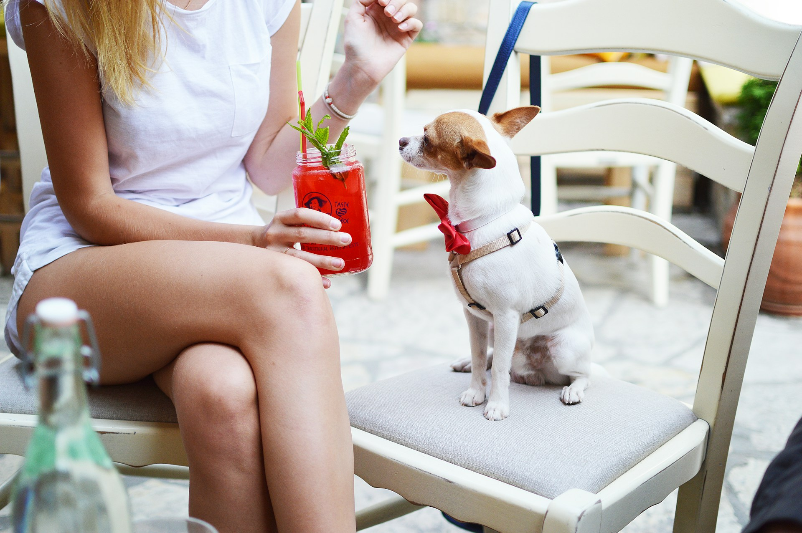
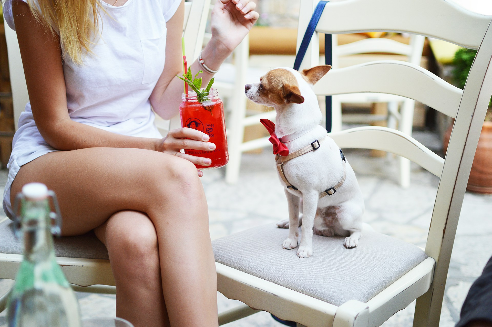

Seja bem vindo ao nosso site!
Saiba mais sobre o Restaurante Paixão e sobre nossos serviços.
Restaurante Paixão
Localizado no coração da cidade, o Restaurante Paixão é o lugar ideal para quem busca uma experiência gastronômica única. Com um cardápio variado e ingredientes frescos, nossos pratos são preparados com muito amor e carinho para você. Venha nos visitar e se apaixonar pela nossa comida!
Por que escolher o Restaurante Paixão para celebrar um momento especial?
- Cardápio variado com opções para todos os gostos
- Opções vegetarianas e veganas
- Pratos deliciosos e bem servidos
- Preços acessíveis
- Menu kids
- Espaço pet friendly
- Opções de vinhos e cervejas artesanais
- Opções de sobremesas e drinks
- Reservas para eventos e festas
- Ingredientes frescos e de alta qualidade
- Pratos preparados com amor e carinho
- Atendimento de excelência
- Ambiente aconchegante e acolhedor
Horário de Funcionamento
Segunda a Sexta: 11h às 22h
Sábado e Domingo: 11h às 23h
Localização
Rua dos Sabores, 123
Bairro Saboroso
Cidade dos Sabores
CEP: 12345-678
 

Imagens do nosso restaurante. ♥